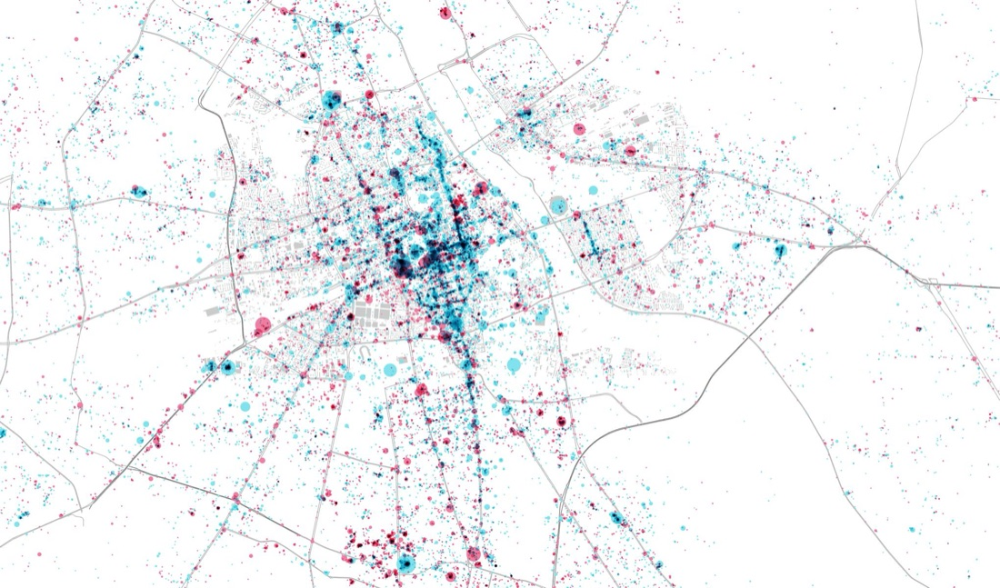

Warsaw Spatial Development Scenarios
Warsaw was updating its “Studium” — the city’s core spatial development strategy — for the first time since 2006, aiming to curb sprawl and build a more compact, multi-functional city. The planning department invited international experts to help move the process from scenario presentation to genuinely scenario-based planning.
Commissioned as part of a formal, staged workshop process following a May 2018 City Council resolution to prepare a new Studium. SPIN Unit (Damiano Cerrone) was invited alongside partner firm 1=2 Urban Design (Jacob Dibble) for a two-day workshop in January 2019, alongside city officials and other international urbanists.
Applied SPIN Unit’s Space/Activities/Values framework to roughly 48,000 Foursquare points of interest across Warsaw, classified into Necessary and Optional activity categories and mapped at both city-wide and street level, to reveal patterns invisible in the city’s existing (extensive but siloed) data.
Delivered as a post-workshop advisory report combining reflections on the two-day session with SPIN Unit’s independent activity analysis.
{kind=link}

Open full size ↗